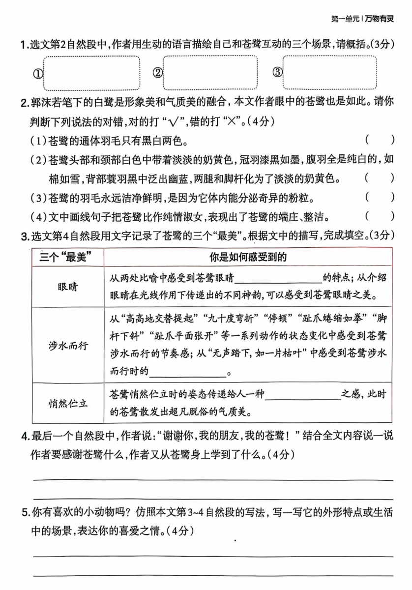
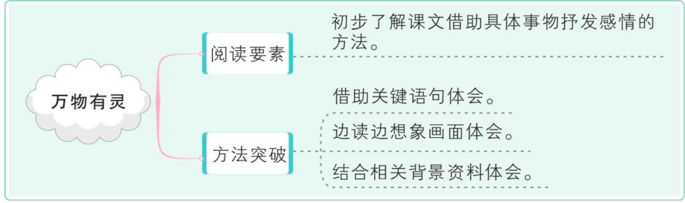
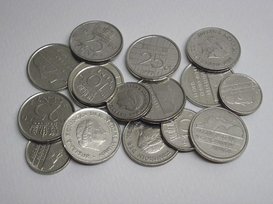
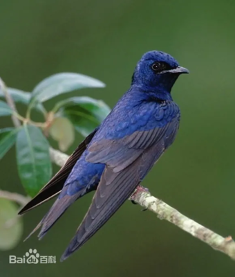
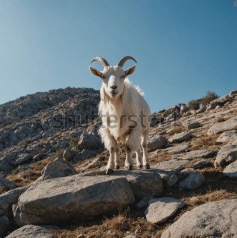
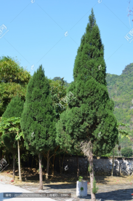
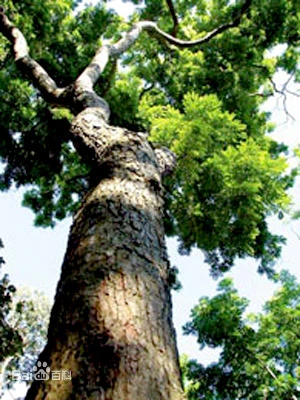
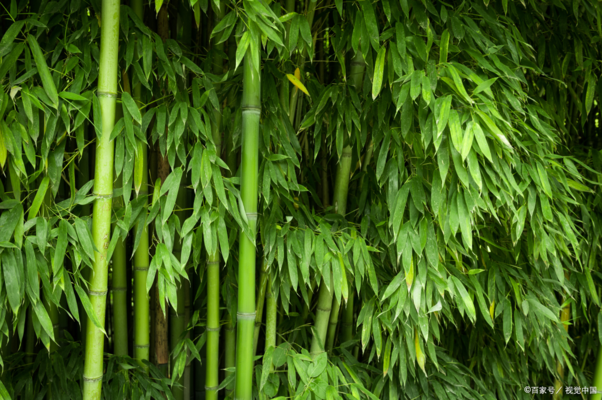
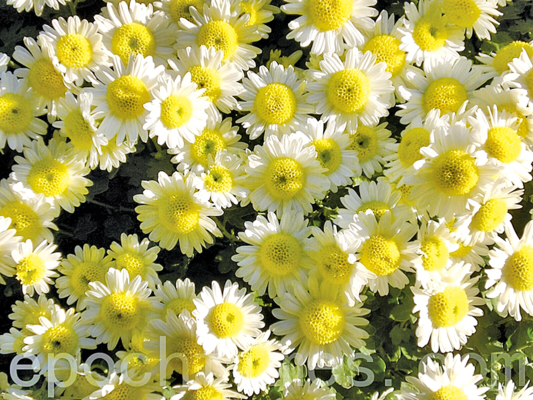

语文家庭作业
第一周
周一
1. 预习《白鹭》
写田拼（生字+P122词语表的词语，词语表的词语写一遍，写拼音），在书上做好预习标记
生字：鹭、宜、鹤、嫌、朱、嵌、框、匣、嗜、哨、恩、韵
P122词语表的词语：精巧 配合 身段 适宜 白鹤 生硬 寻常 忘却 镜匣 孤独 悠然 嗜好 黄昏 恩惠 美中不足
2. 抄写班级公约
在写话本写今天我们一起指定的班级公约
3. 词语表补充词语：
白鹭，郭沫若，嫌弃，蓑毛，长喙，镶嵌，望哨，清澄，铿锵，韵律（抄在语文书词语表处，后面会听写）
周二
1. 默写能手P1-P2
Done
2. 新领程P2
to-do
3. 补齐课堂笔记
Done
4. 订正田拼本
略
5. 阅读练习1《苍鹭，苍鹭》
苍鹭,苍鹭(节选)
叶蔚林
秋天小河的流水是清澈的。每天早晨我都到小河边洗脸漱口;每天傍晚收工之
后,我都到小河边洗澡,洗去一天的汗渍1和疲劳。然后就坐在小河边的草地上,看落霞
在天际变幻,看苍鹭在对岸踯躅2。
日复一日,我和苍鹭成了好朋友。每当我在河边出现时,它们便在对岸不停地拍打
翅膀,呷呷欢叫,仿佛迎接我的到来。有些胆大的,干脆就飞过小河,靠拢我的身旁,
围绕我踱步。如果我逮到一只蚱蜢3,几只苍鹭便争先恐后,伸长脖子前来啄食。这样,我
就有充分的时间,细细观察,欣赏它们的动作和神态,度过一个又一个长长的黄昏。
乍看苍鹭,你会误以为它通体羽毛只有黑白二色,其实不然。它的头部和长颈上
的白色带着淡淡的奶黄,颈项的正中是一线灰白,灰白下延分成两股,经胸腹两侧逐渐
淡下去,及至两腿和脚杆又化为淡淡的奶黄了。只有腹部中间二指宽的一溜羽绒才是
真正的纯白,如棉如雪。黑呢,冠羽4确是漆黑如墨,而肋部两侧的黑色大斑则略呈
锈红;背上的蓑羽是黑中泛出幽蓝,犹如优质钢材的那种黑色。苍鹭的羽毛永远洁净
鲜明,因为它体内能分泌出一种奇异的粉粒,粉粒遍布全身,稍稍拍打、抖动,污垢便随
粉粒脱落。所以苍鹭看上去总是那么端庄、整洁,有如纯情淑女。
苍鹭的眼睛最美,狭长如一叶含羞草5,滚圆的瞳仁6如一粒黑珍珠,上面覆盖着一
层膜。因在光线的作用下,显得变幻莫测:转动时顾盼多情,定睛时则似乎陷入哲理的
沉思。苍鹭最美的动作是涉水而行,细长的、有鳞的两条腿高高地交替提起,九十度弯
折,稍稍停顿,四只带蹼的趾爪蜷缩如拳,然后脚杆下斜,趾爪平面张开,无声踏下,
如一片枯叶。那不是行走,是节奏和旋律,是两把小提琴天衣无缝的重奏。苍鹭最美的姿
态是悄然伫立,单腿落地,一翅半展,长颈弯曲朝后,白色的头枕在墨黑的羽上。在我看来,
这时候的苍鹭仿佛拥有一个属于它自己的世界,彻悟了生命的奥秘……这时,面对苍鹭,
我也就心静如水,宠辱皆忘,什么也不再看见,什么也不再思量了。
这是三十多年前的印象了,但却新鲜如昨。与苍鹭为伴,我熬过了生命中最最灰
暗的一个秋季。谢谢你,我的朋友,我的苍鹭!现在你们还好吗?
(选自《散文》,有删改)
题目

1
- 拍翅欢叫、迎接到来；
- 围绕踱步；
- 争先啄食。
2
- X
- X
- √
- √
3
- 狭长、变幻莫测
- 宁静
- 心静如水、宠辱偕忘
4
感谢苍鹭陪伴他熬过了生命中最最灰暗的一个秋季。
学习苍鹭那种“心静如水、宠辱偕忘”的心态。
5
可爱的小兔子
乍看小兔子，你会误以为它只有洁白一种颜色，其实不然。它的身体大部分被如雪的白色绒毛覆盖，而耳朵尖却是淡淡的粉色，犹如害羞时少女脸颊的红晕。眼睛周围一圈毛色略深，像是精心描绘的眼线，让那红彤彤犹如宝石般的眼睛更加明亮动人。嘴巴周围是一圈柔软的白色短毛，当它吃东西的时候，小嘴巴一动一动的，可爱极了。只有尾巴处一小团绒毛像个圆圆的雪球，是纯粹的白色，没有一丝杂色。小兔子的毛发永远柔软蓬松，因为它时常会用小爪子梳理自己，让自己时刻保持整洁可爱的模样。
小兔子最美的动作是蹦跳前行，小巧玲珑的四肢充满力量地交替弹起，身体轻盈地在空中划过一道优美的弧线，然后稳稳地落在地上。那不是简单的跳跃，是活力与灵动的展现，是一曲欢快的生命乐章。小兔子最美的姿态是安静地趴在草地上，两只前爪交叠，脑袋微微歪着，眼睛半睁半闭，耳朵偶尔轻轻抖动一下。在我看来，这时候的小兔子仿佛沉浸在一个美好的梦境中，享受着生活的宁静与安逸。这时，面对小兔子，我也就心变得格外柔软，所有的烦恼都烟消云散，只想静静地看着它，感受这份纯真的美好。
周三
1.预习《落花生》，在书本上做批注，在田拼本写生字和词语表（补充词语：半亩，茅亭，谈话，深夜，矮小）
生字：亩播浇吩咐亭榨慕矮谈 榴
词语：播种浇水吩咐榨油爱慕体面深夜半亩茅亭谈话深夜矮小
2.《新领程》P2-P3
Done
3.仿写散文诗《白鹭》，写在写话本上
略
4.自行默写《白鹭》
略
周四
-
默写能手P3-P4
Done -
新领程P4-P5
Done -
花生会让我们想到那些默默无闻作贡献的人。看到下面的事物，你会 想到哪些人?分别写一段话。
竹子： 竹子总是挺拔地站立着，让人想到那些刚正不阿的人。他们如同竹子一般，有着坚定的原则和不屈的气节。无论面对怎样的风雨和压力，都不会弯曲自己的脊梁。古往今来，有许多这样的人，比如包拯，他为官清廉，刚正不阿，不畏权贵，为百姓伸张正义。又如陶渊明，不愿为五斗米折腰，毅然辞官归隐，保持着自己的高尚品格。他们就像竹子一样，在岁月的长河中，坚守着自己的信念，成为后人敬仰的楷模。
梅花： 梅花在严寒中独自绽放，让人想到那些坚韧不拔、不畏艰难的人。他们在困境中依然坚守自己的理想和信念，不屈不挠地前行。比如司马迁，遭受宫刑后，忍辱负重，发愤著书，最终完成了史学巨著《史记》。还有苏武，被匈奴扣押在北海牧羊十九年，渴饮雪，饥吞毡，却始终手持汉朝符节，不肯向匈奴屈服。他们如同梅花一般，在恶劣的环境中绽放出绚烂的光彩，激励着后人勇敢地面对生活中的挑战。
蜜蜂： 蜜蜂整日忙碌，为人们酿造甜蜜，让人不禁想到那些无私奉献的人。比如教师，他们就像蜜蜂一样，辛勤地耕耘在教育的田野上，用自己的知识和爱心，培育着一代又一代的学生。还有那些默默奉献的志愿者们，他们利用自己的业余时间，为需要帮助的人提供各种服务，不图回报。他们如同蜜蜂一般，用自己的行动诠释着奉献的意义，为社会带来温暖和希望。
路灯： 路灯在黑夜里默默发光，照亮人们前行的道路，让人想到那些默默付出、为他人带来光明的人。比如那些在平凡岗位上坚守的劳动者，环卫工人每天清晨就开始清扫街道，为城市带来整洁；电力工人不畏严寒酷暑，抢修线路，保障人们的用电需求。他们就像路灯一样，虽然默默无闻，却发挥着重要的作用，为人们的生活带来便利和安全。 -
预习《桂花雨》，在书上做批注，写田拼本补充：木兰花，箩筐，老婆婆，高兵，缠绕，浸润，香飘十里，捡拾
生字：杭懂兰箩婆糕饼浸缠茶捡
词语：桂花 懂得 糕饼 茶叶 木兰花，箩筐，老婆婆，缠绕，浸润，香飘十里，捡拾
周五
1. 《白鹭》《落花生》阅读题练习.docx
阅读
泥土的微笑
我在花园里种满了玫瑰花，远远望去，像一片燃烧的晚霞。我想等朋友来做客的时候，让他们带些回家。我相信朋友捧着火红的玫瑰渐渐走远的背影，一定能点燃易感的情怀。
有一天，一位非常要好的朋友来探望我，我知道她平素最喜欢花花草草了，临别时我说：“采一束玫瑰点缀你的闺房吧，保证十里飘香。”朋友轻轻跨进花园，东闻闻，西嗅嗅，神采飞扬，就是不肯采摘。我说没关系，多得很，我又不是花店的老板，不会靠玫瑰赚钱的。说完我就举起剪刀准备采摘。朋友急忙拦住，高声叫着：“不可，不可。”
“这么美丽的玫瑰剪下来，让人心疼。”她抓紧我的袖子叮咛，“千万不能剪，玫瑰是泥土的微笑，谁忍心破坏美得醉人的微笑呢？”我的灵魂陡然一惊，丑陋的泥土，卑微的泥土，朴素的泥土，因为玫瑰露出了惊艳一笑。因为这一笑，让人非常爱惜。一位朋友在拍卖会上有幸购得一个花瓶，花瓶细颈大肚，碎花蓝白调子，流光溢彩。从造型到色彩，整个如唐朝盛世的化身，雍容，华贵，高傲，悠闲，目空一切。
朋友请我们大家观赏。奇怪的是每一个参观者都小心谨慎，生怕碰坏这盛唐的宝贝。其实不过是一撮泥土，经过窑烧才千修百炼成瓷中经典。
江南的紫砂壶7玲珑剔透，泥人张8的彩塑9令人拍案叫绝，它们不都是泥土的微笑吗？即使曾丑陋，即使曾卑微，即使曾朴素，同样让人肃然起敬。我懂了，泥土因玫瑰而美丽，玫瑰因泥土而真实；再平凡的人，也没有理由被埋没，只要努力活出色彩，就一定能叫人刮目相看。
2. 五（上）语文：第1单元主题阅读（知识梳理+精选阅读）.pdf
知识梳理
知识点:初步了解课文借助具体事物抒发感情的方法 
本单元的课文主要是围绕“一花一鸟总关情”这个主题编排的。由《白鹭》《落花生》《桂花雨》《珍珠鸟》 四篇课文组成。
- 《白鹭》描写了白鹭颜色的适宜、身段的精巧以及觅食、栖息、飞行时的韵味，给人以美的享受，表达了作者对白鹭的喜爱和赞美。它运用的修辞手法有比喻、排比、拟人、反问;写作手法有首尾呼应。
- 《落花生》采用借物喻人的写作方法，围绕着“落花生”，写了“种花生、收花生、尝花生、议花生”的过程，着重写了一家人过花生收获节时“议花生”的情景，由花生的特点道出“人要做有用的人，不要做只讲体面， 而对别人没有好处的人”这个耐人寻味的道理，体现了作者不为名利、只求有益于社会的人生观与价值观。
- 《桂花雨》以桂花为线索，回忆了作者童年时与桂花相关的生活场景，抒发了对故乡和亲人的思念以及对童年 生活无比怀念的感情。
- 《珍珠鸟》以细腻真切的语言写出了珍珠鸟由怕人到信赖人的情感变化过程，表达了作者与珍珠鸟之间的情意，表达了“信赖，往往创造出美好的境界”的感受。
学习这四篇课文，我们要学习运用了对比的写作手法突出了事物的特征，这种手法的运用，使描述的事物形 象更鲜明生动。如《白鹭》中把白鹭和白鹤、朱鹭、苍鹭进行对比;《落花生》中把花生和桃子、石榴等进行对比;《桂花雨》中把故乡的桂花和杭州的桂花进行对比;《珍珠鸟》中把大珍珠鸟的“胆小”与小珍珠鸟的“与人 亲近”的前后对比，突出了事物形象，令人受到启发。我们还要学习通过理解重点词语的意思的方式理解重点句子，从而把握住文章的中心意思，理解课文内容。我们也要通过学习课文内容，体会“花”“鸟”的内涵，培养观察、思维能力，培养善于通过普通事物发现不寻常的“美”，并能根据对事物的描写，抒发自己的感情。
阅读技巧点睛:如何概括文章的中心思想
文章的中心思想就是作者的写作意图。我们如何概括文章的中心思想呢?
- 了解文章的主要内容，思考作者为什么要写这些内容，领会中心思想。
如:《桂花雨》中作者描写了儿时摇桂花的场景，想一想作者为什么要写这些内容，从而可以知道作者是在 借桂花雨怀念童年，怀念故乡。 - 从题目中找中心思想。
有些文章的题目直接点明了中心思想，如《为中华之崛起而读书》一文的题目直接点明了少年周恩来的博大 胸襟和伟大志向。 - 分析文章的重点段落，从中提炼中心思想。
如:《落花生》的倒数第三自然段，作者在父亲的引导下说出自己明白的道理，结合上下文的对话，不难发 现作者说的这句话正是本文的中心思想。 - 从中心句找中心思想。
如:《珍珠鸟》中最后一句“信赖，往往创造出美好的境界”就是文章的中心思想。本文所有的叙述、描写， 都是为了引出这个中心思想。解答这类题时，可采用“本文通过记叙/描写了……，表现/赞扬了……的品质/精神”这种句式。
精选阅读
一、(2021·全国·五年级单元测试)阅读短文，完成练习。
野菊花
①野菊花!野菊花开在山野里。
②有谁见过这般豪放壮烈的花云?有谁闻过这么沉郁凝重的药香?那样泼泼辣辣地开。一簇一簇，一滩一滩， 一坡一坡，灿烂辉煌!
③花朵不过一分镍币10大小，密密匝匝，重重叠叠，织造出淮河堤畔、大别山麓梦幻般神奇的织锦，分明是太阳和月亮灼目滚烫的合金，让造物主随意倾倒泼洒在这里，叫人心灵久久震颤。


④几番秋风秋雨秋霜，山野早已敛去辽阔的绿氅11(外套)，只把灰褐的脊背袒露世间;曾经被悠逸的白云衬托得如此高远的天空，也被铅灰压缩了胸臆;紫燕12和鸿雁归飞的呼唤，杳然13寂灭在江南的路上，留下水牛与山羊的哞咩14，在枯草败叶间低回……纵然是松柏也已减色，纵然是檀竹15也已落魄，唯独野菊花，却以她野性的勇敢和进取，在这片天空下，这片山野上，举起开放的拓展的金旗，“要与西风战一场，遍身穿就黄金甲”。
     
⑤多少墨客骚人奉和酬唱16，把菊魂菊意唱彻历朝历代;唱的大多是庭院、公园、花盆里的名菊。比起野菊花来，这些被驯化、供玩赏的同类，不免沾染着脂粉气、奶油味，显得矫饰和做作。而野菊花宁愿入汤入药、成渣成泥，决不任人摆布、供人亵玩17。
⑥这就是野菊花!
解释下面的脚注：
解释下面的脚注：
解释下面的脚注：
-
汗渍：汗水在衣物或皮肤上留下的痕迹或污渍。 ↩
-
踯躅：徘徊、停留不前的样子。这里形容苍鹭在河岸边走来走去。 ↩
-
蚱蜢：一种昆虫，常见于草地上，擅长跳跃。 ↩
-
冠羽：鸟类头部或颈部的长羽毛，常用于展示或识别。 ↩
-
含羞草：一种植物，其叶子受到触动时会快速合拢，仿佛害羞一样。 ↩
-
瞳仁：眼睛中间的黑色圆点，即瞳孔。 ↩
-
紫砂壶：江南的一种手工制作的陶瓷茶壶，以其玲珑剔透的造型和精湛的工艺而闻名。 ↩
-
泥人张：中国北方流传的一个以制作彩塑为特色的民间艺术流派，其代表人物张明山以高超的技艺塑造出众多生动的人物形象。 ↩
-
彩塑：一种以黏土、彩泥等为主要材料，通过手工捏塑、彩绘等工艺制作而成的雕塑作品。 ↩
-
镍币：一种小面额的金属货币。此处用来形容花朵的大小。 ↩
-
绿氅：绿色的外套。这里将山野的绿色植被比喻成绿氅。 ↩
-
紫燕：一种候鸟，外形小巧，羽毛呈紫色或蓝黑色。 ↩
-
杳然：形容没有踪迹，消失不见的样子。 ↩
-
哞咩：分别是水牛和山羊的叫声拟声词。 ↩
-
檀竹：檀木和竹子。此处泛指竹子中的一种优质品种。 ↩
-
奉和酬唱：指文人之间作诗应答，互相唱和。 ↩
-
亵玩：轻慢地玩弄。 ↩